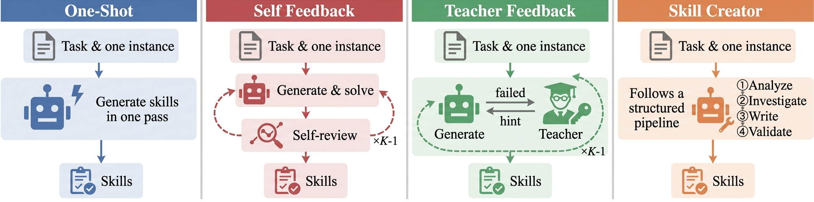
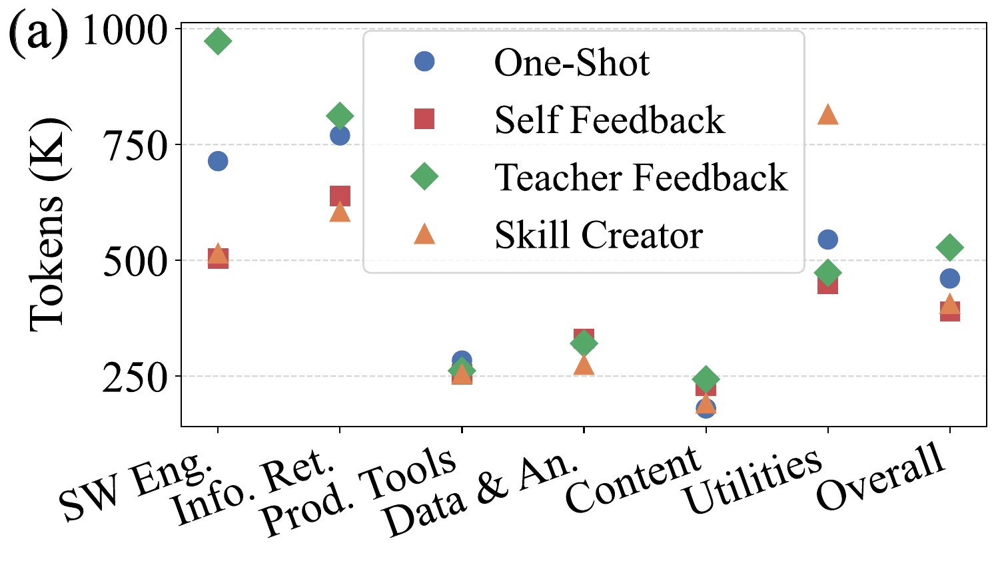
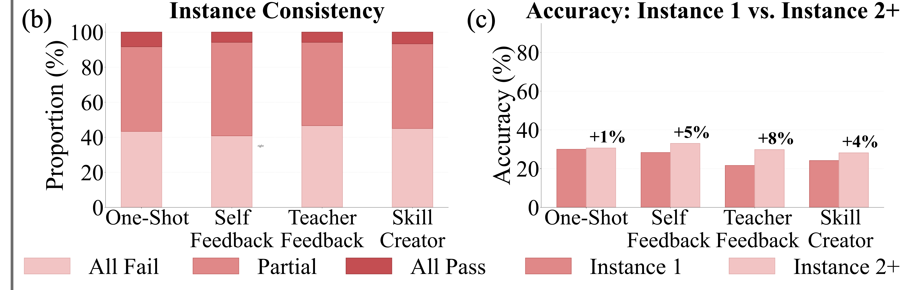
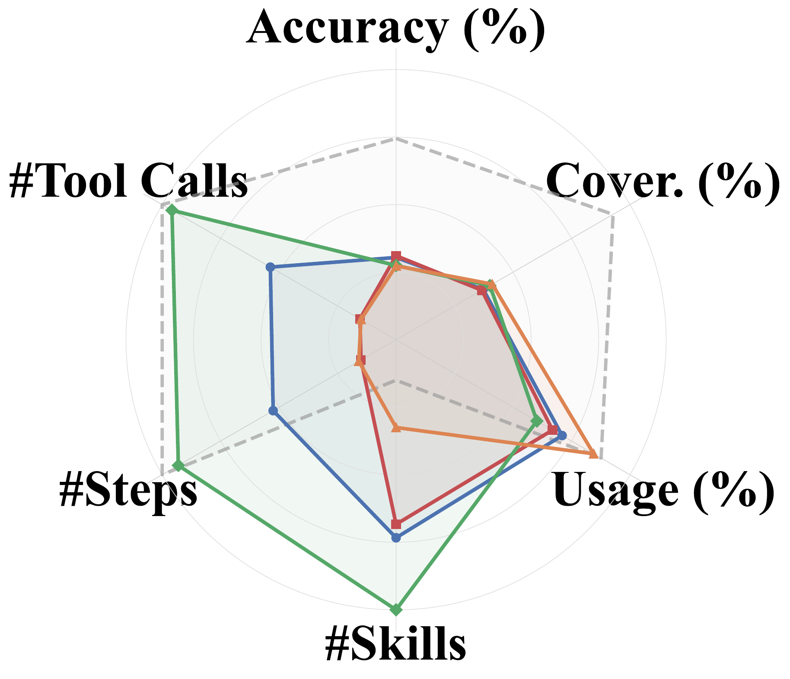
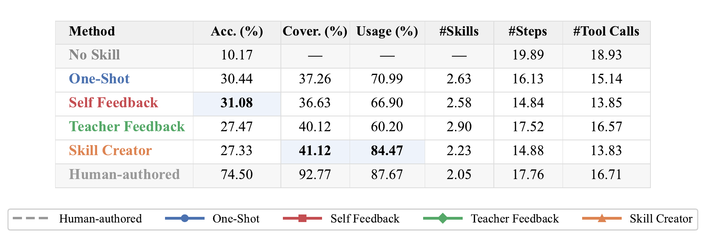
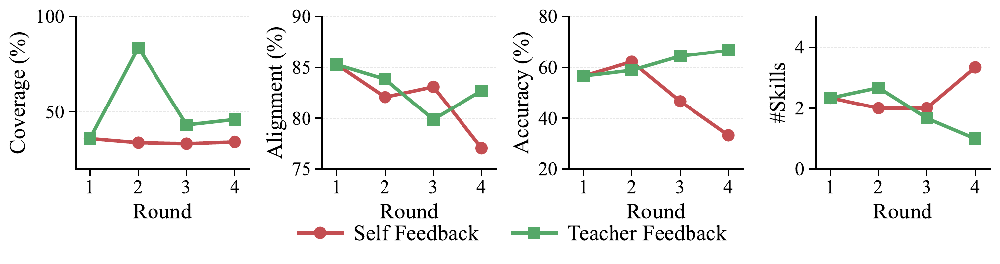

How four continual learning methods — One-Shot, Self Feedback, Teacher Feedback, and Skill Creator — perform across six LLM backbones, evaluated at three levels: skill quality, trajectory, and task outcome. SkillLearnBench is open-source and supports testing more continual learning methods and LLMs.
We evaluate four methods covering diverse learning strategies. All methods receive the same task instruction plus one seed instance as input and produce a skill set as output.

The agent generates a skill set in a single pass from the task description. Serves as a baseline for knowledge acquisition without any feedback or recursive optimization.
A self-evolution loop: the agent generates initial skills, attempts the task, reviews its own trajectory, identifies issues, and refines skills. This cycle repeats K times without external supervision.
An expert teacher with access to human-authored skills provides directional guidance (without revealing ground-truth) after each failed attempt. The agent updates skills and re-attempts.
A structured multi-stage pipeline: analyzing task intent, investigating edge cases, writing a skill specification, and validating it with automated checks.
Ranking of 6 LL M backbones under each continual learning method, across all three evaluation levels. Scores are averaged across all 20 tasks; rank is by task accuracy.
| # | Model | Level 1: Skill Quality | Level 2: Trajectory | Level 3: Outcome | ||||
|---|---|---|---|---|---|---|---|---|
| Coverage | Executability | Safety | Alignment | Usage | Tokens ↓ | Accuracy | ||
Headline takeaways from evaluating four continual learning methods across six LLMs.
Every continual learning method outperforms the no-skill baseline, yet even the best method covers only ~45% of the gap to human-authored performance, leaving substantial room for improvement.
No single method leads across all tasks and LLMs, and scaling to stronger LLMs does not reliably produce better skills. The best strategy depends on both the task type and the generation LLM.
Multiple iterations with external teacher feedback yield genuine improvement, while self-feedback alone induces recursive drift after the first round — coverage stalls and accuracy degrades.
Click column headers to sort. All metrics are in % except #Tokens. Bold: best among four methods per LLM; underline: second best.
| Method | Level 1: Skill Quality | Level 2: Trajectory | Level 3: Outcome | ||||
|---|---|---|---|---|---|---|---|
| Coverage | Executability | Safety | Alignment | Usage | #Tokens ↓ | Acc. | |
| No Skill | — | — | — | 70.22 | — | 727K | 10.17 |
| Human-authored | 92.77 | 52.96 | 92.01 | 84.47 | 87.67 | 590K | 74.50 |
| Continual Learning LLM: Claude Haiku 4.5 | |||||||
| One-Shot | 41.01 | 51.54 | 94.33 | 76.68 | 58.02 | 537K | 30.33 |
| Self Feedback | 37.42 | 44.40 | 94.25 | 74.39 | 51.31 | 474K | 26.50 |
| Teacher Feedback | 45.00 | 47.98 | 94.20 | 75.48 | 49.29 | 639K | 34.00 |
| Skill Creator | 41.86 | 48.54 | 93.80 | 76.84 | 82.81 | 551K | 16.67 |
| Continual Learning LLM: Claude Sonnet 4.6 | |||||||
| One-Shot | 50.27 | 46.82 | 94.46 | 72.39 | 78.17 | 321K | 38.83 |
| Self Feedback | 50.86 | 47.92 | 93.79 | 73.29 | 73.86 | 313K | 31.33 |
| Teacher Feedback | 47.49 | 56.68 | 91.79 | 72.10 | 62.34 | 521K | 34.83 |
| Skill Creator | 43.32 | 50.12 | 93.88 | 70.54 | 82.33 | 323K | 19.50 |
| Continual Learning LLM: Claude Opus 4.6 | |||||||
| One-Shot | 42.21 | 43.89 | 94.56 | 75.52 | 71.19 | 341K | 28.17 |
| Self Feedback | 42.61 | 45.36 | 94.72 | 75.30 | 67.17 | 305K | 31.50 |
| Teacher Feedback | 50.52 | 51.48 | 91.93 | 78.32 | 71.76 | 412K | 34.00 |
| Skill Creator | 45.69 | 49.77 | 94.11 | 74.96 | 81.58 | 291K | 30.50 |
| Continual Learning LLM: Gemini 3.1 Flash Lite | |||||||
| One-Shot | 22.10 | 39.69 | 94.47 | 76.41 | 75.33 | 471K | 19.33 |
| Self Feedback | 20.74 | 37.53 | 93.33 | 75.36 | 67.64 | 490K | 31.50 |
| Teacher Feedback | 34.39 | 38.40 | 92.10 | 74.49 | 67.68 | 549K | 15.17 |
| Skill Creator | 26.71 | 42.84 | 93.45 | 75.22 | 91.42 | 501K | 22.00 |
| Continual Learning LLM: Gemini 3 Flash | |||||||
| One-Shot | 36.61 | 46.06 | 95.22 | 76.29 | 76.25 | 492K | 31.67 |
| Self Feedback | 34.57 | 38.06 | 94.34 | 77.77 | 66.61 | 399K | 27.67 |
| Teacher Feedback | 41.50 | 45.59 | 93.88 | 72.30 | 68.75 | 542K | 29.00 |
| Skill Creator | 42.33 | 44.79 | 95.55 | 77.66 | 77.37 | 424K | 38.50 |
| Continual Learning LLM: Gemini 3.1 Pro | |||||||
| One-Shot | 31.34 | 45.93 | 94.53 | 73.94 | 66.96 | 604K | 34.33 |
| Self Feedback | 33.55 | 48.78 | 95.59 | 73.51 | 74.83 | 360K | 38.00 |
| Teacher Feedback | 21.80 | 36.84 | 91.31 | 74.55 | 41.40 | 504K | 17.83 |
| Skill Creator | 46.85 | 49.29 | 93.01 | 76.60 | 91.33 | 348K | 36.83 |
| Average Across All LLMs | |||||||
| One-Shot | 37.26 | 45.66 | 94.59 | 75.21 | 70.99 | 461K | 30.44 |
| Self Feedback | 36.63 | 43.68 | 94.34 | 74.94 | 66.90 | 390K | 31.08 |
| Teacher Feedback | 40.12 | 46.16 | 92.53 | 74.54 | 60.20 | 528K | 27.47 |
| Skill Creator | 41.12 | 47.56 | 93.97 | 75.30 | 84.47 | 406K | 27.33 |
Deeper look at what each continual learning method changes — and when skills actually help.
Continual learning through skills helps most when tasks have reusable structure. The largest gains appear in categories with clear workflows such as Software Engineering and Productivity Tools. Categories that are more open-ended show smaller gains and sometimes regress, suggesting a rigid skill can hurt when the task does not match the learned template.

Most generated skills are partially effective: they pass some instances but fail on others, indicating they capture only part of the task knowledge. Accuracy on held-out instances is comparable to the seed instance, ruling out overfitting. The bottleneck is not that skills overfit to the seed, but that they fail to capture the core task logic needed across all instances.

Different continual learning mechanisms alter agent behavior in fundamentally different ways: Self Feedback produces more focused skills through execution-based revision → shorter, more direct trajectories. Teacher Feedback expands the skill set → higher coverage but heavier execution. Skill Creator produces structured skills invoked most often, yet accuracy lags when content misses key task logic.


External feedback drives genuine improvement, while self-revision without new information leads to drift. With Self Feedback, coverage stays flat and alignment declines — accuracy briefly rises but then falls sharply. With Teacher Feedback, the first round of external feedback substantially restructures skills, and improvement compounds over subsequent rounds.
